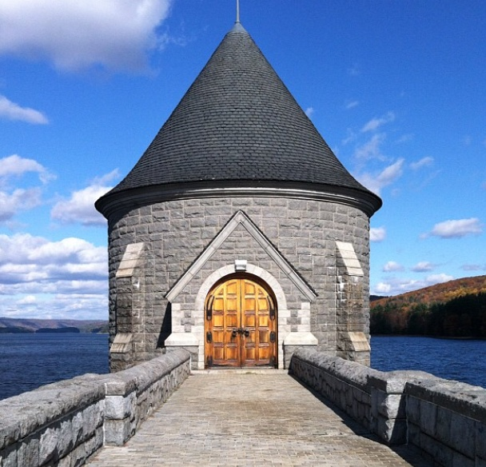
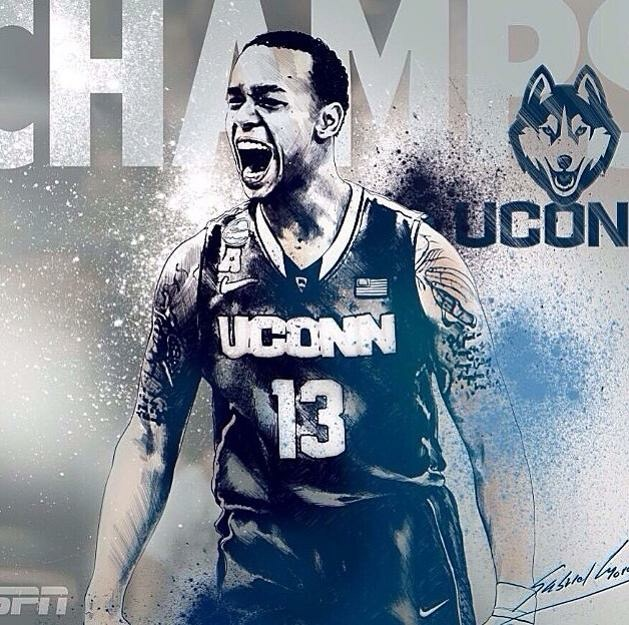
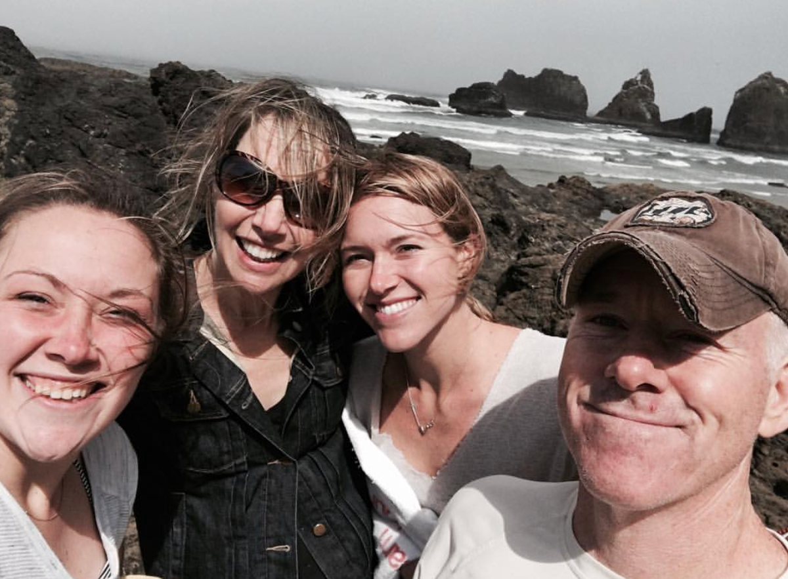
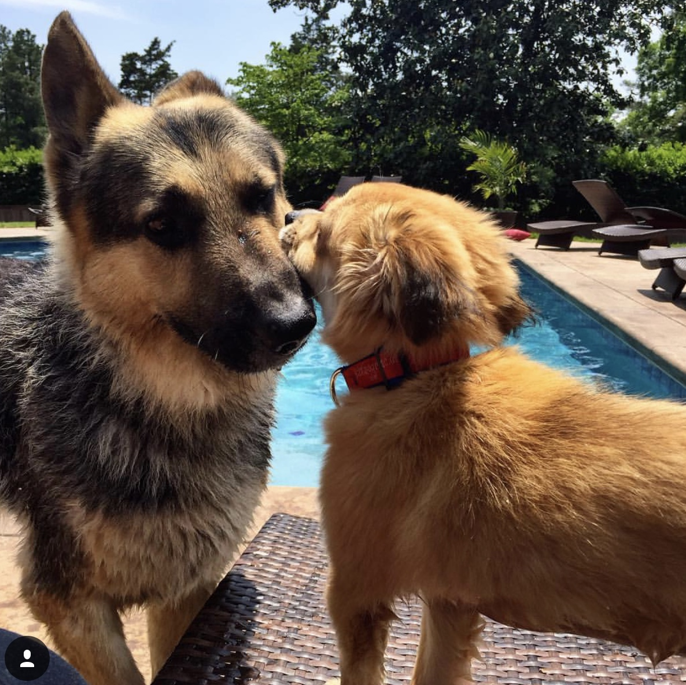
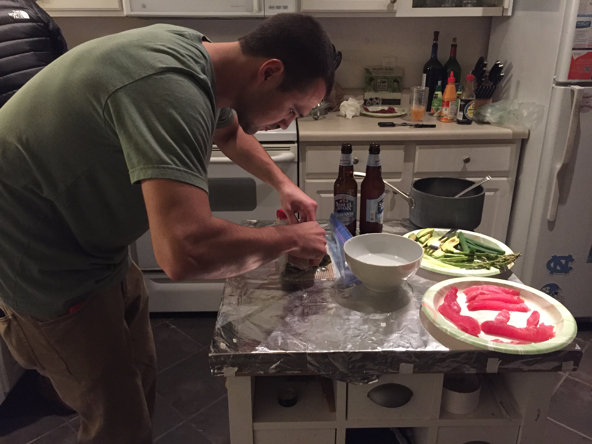

Who is Chelsea Raftery?
Chelsea is a New England native born and raised in a small, Northwest Connecticut town called Barkhamsted. Since she can remember, Chelsea has been a lover of all things donuts, and college basketball. Learn more about this hidden gem of a town
 Growing up with Chelsea
Chelsea loved growing up in a small town. Her mom, dad and younger sister Sarah are extremely close. Chelsea was an avid sports enthusiast and loved spending time on the soccer field and basketball court. After graduating from highschool, Chelsea enrolled at the University of Connecticut. It had been a dream of hers to join the Husky family. She graduated in 2009 with a degree in Communications, and set her sights on Boston, MA.

BOSTON, MA
Chelsea moved to Boston, MA in the Summer of 2010. With $500 and not a clue - she embarked on what would be her first taste of adult hood.
- First she rented an apartment with 4 of her closest friends
- Next, she got her first big kid gig as an executive assistant at Cushman & Wakefield, a commercial realty firm. She then went on to work in campaign management for PayPal Media Network.
- While working and living in Boston's North End, Chelsea got her fill of pastries and pasta and loved getting to know the city
North Carolina Bound
Chelsea moved to North Carolina to pursue an opportunity with a boutique fitness company that was opening their first Raleigh Studio. She is passionate about health and wellness, and was excited to get Flywheel Sports up and running. Her family had also moved to NC, so it was great to be close to them again.
- Her job with Flywheel took her to Miami, FL in the Spring of 2014 to revamp the Miami Beach Studio. But....
- A few days before she left for Miami, she met her now Fiance David...

- Together we have 2 dogs, Ray and Shelby 
- We share a love of all things college basketball
- And we love to cook together - sushi is without a doubt my favorite food, sometimes we'll even attempt to make it ourselves. 